Field notes · Simulation as a test harness
The Solver Is the Unit Test.
A compiler tells you your code is wrong. A finite-element solver tells you your bracket is wrong. That symmetry is turning mechanical engineering software into one of the better training environments we have, and it is further along than most people realise.
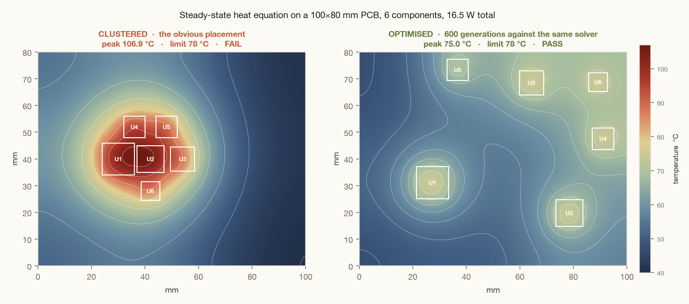
I have spent the last few months building CAD and CAE reinforcement-learning environments for Anthropic, training data for the Claude models, and the thing that changed how I think about it is not the geometry. It is that a physics solver plays exactly the role a test suite plays in software. It is cheap, it is deterministic, it does not care about your reasoning, and it cannot be argued with. You either got under 78 °C or you did not.
This post is three claims. First, that simulation software has quietly become a build-and-test framework for agents, and it works. Second, that the current failure modes are specific and measurable rather than mysterious, and I will show you 1,758 real rollouts to make the case. Third, that the interesting unlock is not better models against today's solvers. It is what happens when the solvers themselves get fast enough to sit inside the loop.
01Physics is a labelling machine that never gets tired
Most benchmark data has a labelling problem: either a human decides the right answer, which is expensive and inconsistent, or a model does, which is circular. Engineering geometry sidesteps this. A modal solver tells you the first natural frequency. A collision tester tells you which fraction of approach directions can reach a face. A non-dominated sort tells you which designs are on the Pareto front. Nobody is expressing an opinion, and the label generator runs at whatever rate you can afford compute for.
The corpus I have been working in leans on a handful of public datasets, and the two workhorses are the Autodesk Fusion 360 Gallery, which is real parts modelled by real people, and DeepJEB, which is synthetic jet engine brackets carrying full simulation results. Here are five real DeepJEB brackets, rendered straight out of the shipped occupancy grids.
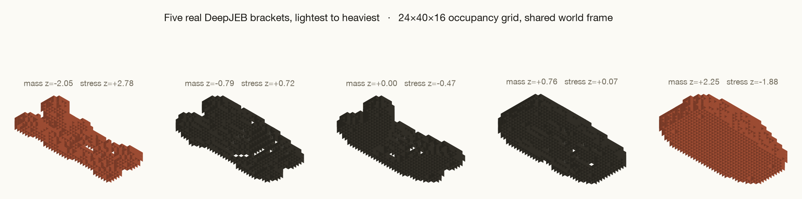
voxels.npz, ordered by mass. Every design sits in the same world frame, so nothing needs pose normalisation. Attached to each one: mass, peak von Mises stress under four load cases, and the first two natural frequencies, all from the upstream solver.
What the model actually receives is much thinner than the CAD file. For B-rep parts I reduce every trimmed face to a fixed 5×5 grid of surface samples carrying position, unit normal and a coverage mask, then stack the faces and hand over an adjacency graph. It is deliberately lossy, which is the point: a model that wants exact geometry does not get it, and permutation invariance stops being optional.
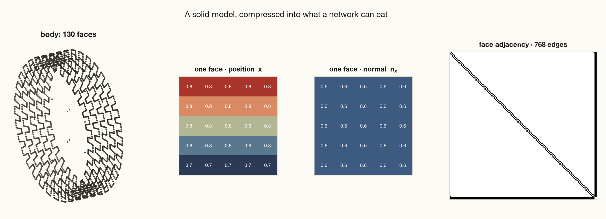
[5, 5, 7] tensor the network sees, and the face adjacency matrix on the right. A part becomes a bag of faces plus who touches whom. Nothing else survives.
02What the loop feels like from inside the container
The PCB task at the top of this post is the clearest example of the build-and-test analogy, because the solver is actually shipped inside the container. The agent gets a FEniCSx thermal model, a board, six components with fixed power dissipations, keep-out rectangles, clearance rules, and a 78 °C ceiling. Each solve takes tens of seconds. There is no analytical shortcut. You place, you solve, you read the peak, you move things, you solve again.
That is a compile-test-refactor loop with heat instead of type errors. And the failure is legible in exactly the way a stack trace is legible: the left panel is not just worse, it is worse for a visible reason, because six heat sources sitting on top of each other superpose into one hotspot that the board cannot spread.
The solver is not grading the answer. It is grading the part. The distinction is what makes the signal trustworthy.
Most tasks in the corpus do not ship a live solver, though, because most solvers are too slow. Instead the physics is baked upstream into a dataset and the agent has to learn a surrogate for it. Which raises the obvious question of whether the surrogate has learned the physics or just learned to look like it. Here is the same bracket section under torsion, solved properly:
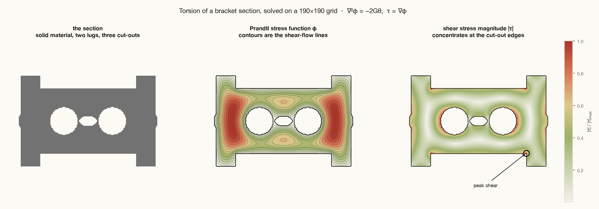
Vibration is the same story with a sharper edge. A mode shape is not just a smooth field; it has nodal lines, curves where the structure does not move at all, and their position is set by the ribs and the cut-outs. Predicting the field roughly right while putting a nodal line in the wrong place is a physically meaningless answer that still scores well on mean squared error.
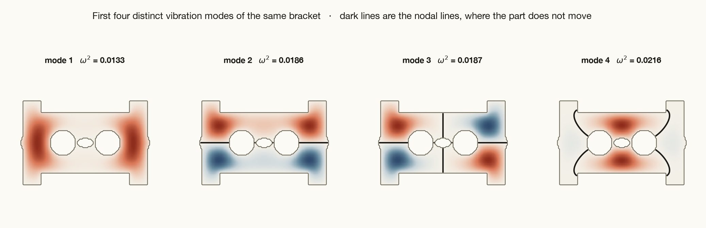
deepjeb-first-modeshape-field task, and the migration of those dark lines as the design changes is precisely what a blurry model gets wrong.
The corpus goes wider than structures. There are 60-odd PDEBench branches, around 50 built on Polymathic's The Well, 23 on AirfRANS aerodynamics, plus sheet-metal forming, machining feature recognition and CAD program synthesis. Fluids show up as a genuinely hard forecasting problem:
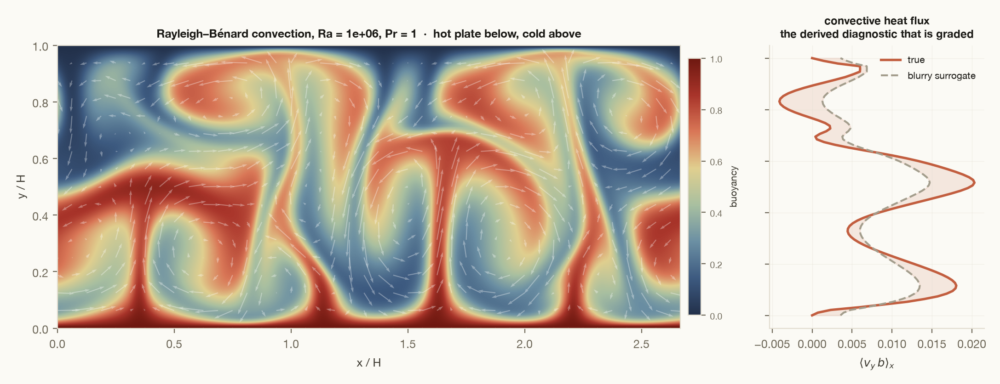
And a good chunk of the corpus is not learning at all, just constrained design against closed-form physics. Those tasks are pure verification: every constraint is a gate, and the geometry of the feasible set is often the whole difficulty.
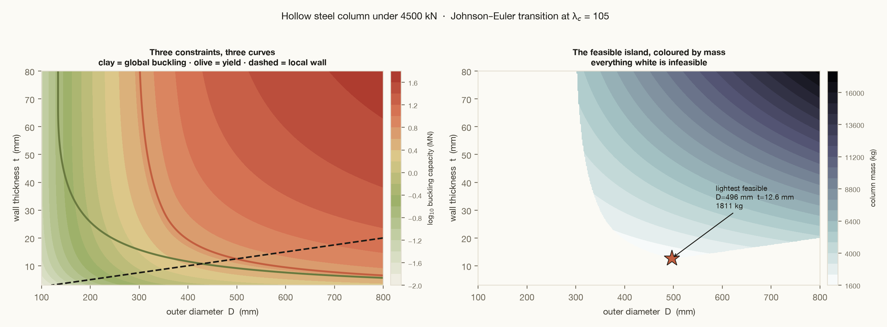
031,758 rollouts, and the middle is missing
Here is where the essay stops being about design taste and starts being about data. I pulled every completed agent run I could reach off the Taiga API for this environment: 4,104 jobs, 2,293 problem runs, 1,758 of which produced a score, across 140 distinct problems. Almost all of it is Fable 5. This is what the training signal actually looks like.
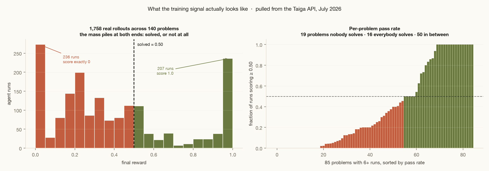
That shape is the single most useful thing I learned. A task that everything solves and a task that nothing solves are equally worthless for training, and by that standard something like 41% of this corpus is currently producing no usable signal. The work is not making tasks harder. It is moving tasks into the middle from whichever side they are stuck on.
Which tasks are stuck, and where, is not random at all:
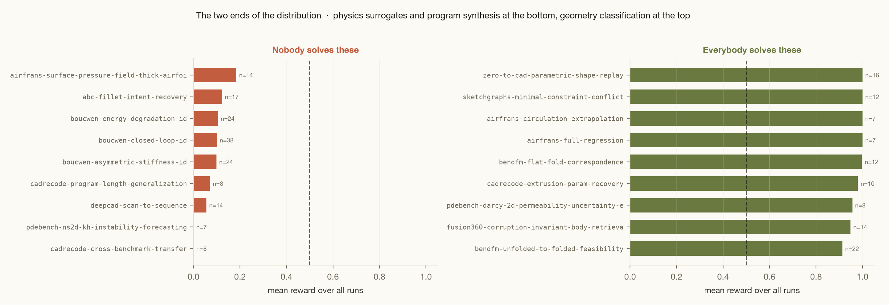
Read that split carefully, because it is a clean statement about capability. Agents are good at geometry when the answer is a smooth function of things they can see. They fall apart when the task requires inverting a dynamical system, recovering discrete structure, or predicting outside the envelope they were trained on. Those are not three unrelated weaknesses; they are all the same weakness, which is that gradient descent on an interpolation objective does not produce a model that reasons about mechanism.
04Four failure modes, and what actually fixes them
The failures cluster. Every one of these I hit personally, and every one has a countermeasure that is now standard across the corpus.
Blur
The model minimises pixel error by predicting something smooth and physically impossible. Nodal lines vanish, plumes average out, stress peaks flatten. Countered by grading a derived invariant instead of the field.
Degenerate specialisation
Solve the one easy channel perfectly, abandon the rest, collect partial credit. Countered by aggregating metrics with a minimum rather than a mean, so partial solutions score zero.
Overfitting the noise
Train to convergence on labels that are partly wrong and get worse the longer you train. Countered by corrupting the shipped labels on purpose while keeping the hidden ones clean.
Envelope collapse
Excellent inside the training distribution, useless a step outside it. Countered by drawing the graded set from a region the training data does not cover, and saying so in the instructions.
The third one has the most vivid picture. In the Pareto task a quarter of the shipped labels are perturbed on one channel by noise at 1.4 standard deviations, in units where the honest spread is 1.0. The hidden labels are clean. Here is what that does to the front you nominate if you simply believe your training data:
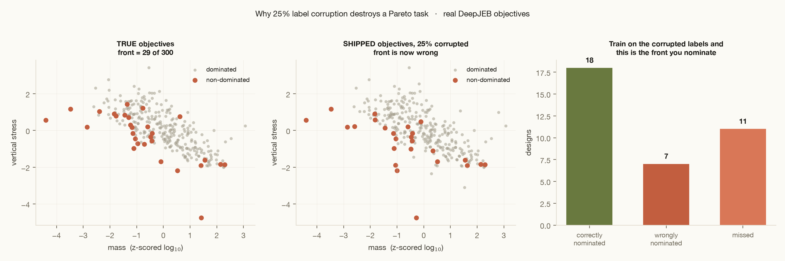
The second countermeasure, the minimum, is the one I would defend hardest. If you average your metrics, a model that nails one objective and abandons the others gets partial credit and a gradient pointing further into the cheat. Take the minimum and the only way to move is to fix your worst metric. On the Pareto task a mass-only submission earns a perfect front_precision of 1.00 against a front_mcc of 0.17, so the reward is 0.00, which is the correct score for it.
Each metric then passes through four anchors before it becomes a reward, and those anchors are measurements rather than intentions: baseline is what an untrained network actually scores, target is where the reference solution actually lands. Here is the real thing, running live. Try to find a setting where a model is excellent at two things and gets paid for it.
The middle two presets are the interesting ones. Easy queries only scores 0.95 overall but collapses on heavily occluded queries. Can't split near-duplicates retrieves well but cannot tell a part from its sibling in the catalog, which in a real parts library is the only case anyone cares about. Both look strong on the headline number. Both score 0.09.
That task, incidentally, is one of the 16 that everybody now solves: 14 runs, mean reward 0.95. Which is a useful reminder that the anchors I was so careful about in May were already too loose by July.
More turns does not help. Across 1,758 scored runs the correlation between turns used and final reward is −0.08. Agents that thrash are not agents that are close. Compute is not the binding constraint on these tasks; knowing what to do is.
Roughly a quarter of runs never produce a score at all. 535 of 2,293 failed outright on infrastructure, turn limits or container faults. Before you tune a reward function, that number is where the signal is actually leaking.
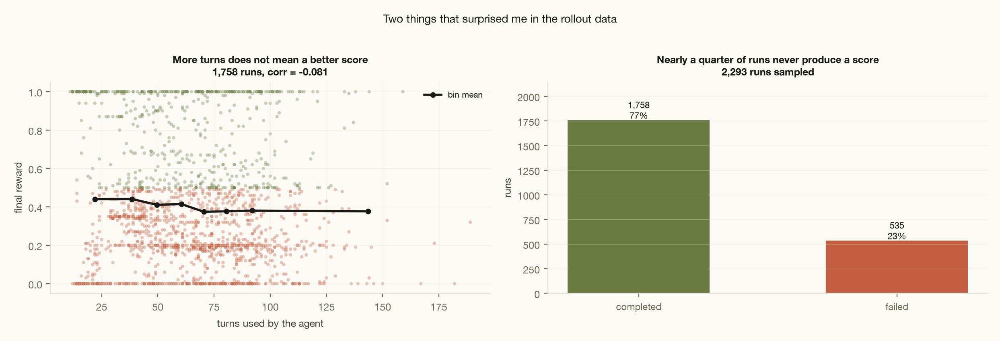
05The bottleneck is solver latency, not model capability
Notice which task in this post had a live solver in the loop: exactly one, the PCB. Every other environment is a frozen dataset with the physics precomputed, because a real FEA or CFD run takes minutes to hours and no training loop can absorb that. The corpus is shaped around that constraint far more than around anything about the models.
This is the same position software agents were in before fast test suites and cheap containers. You cannot iterate against a verifier you can only afford to call twice. So consider what changes as solvers get faster, whether through GPU-native FEM, learned preconditioners, reduced-order models, or surrogates that are trustworthy enough to sit inside the inner loop and get checked by the real solver only at the end.
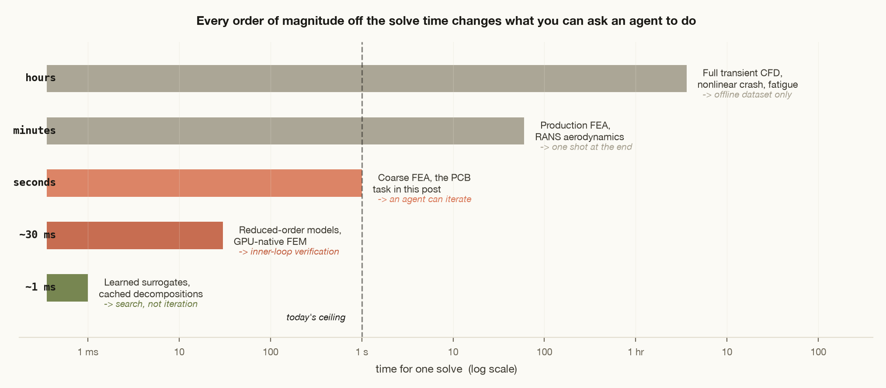
Every environment in this corpus is shaped by how expensive it is to check the answer. Make checking cheap and the shape changes completely.
06The inverse problem is the actual job
Almost everything in the corpus asks a model to predict a property of a part someone else designed. That framing exists because it is what a frozen dataset can support. The job an engineer is actually paid for runs the other way: here is a load case, an envelope, a material and a manufacturing process, produce the part.
We already know how to do this without any learning at all, and it is worth looking at what it costs. Below is a topology optimisation I ran while writing this: a structure discovered from nothing but a load, a support and a 50% material budget.
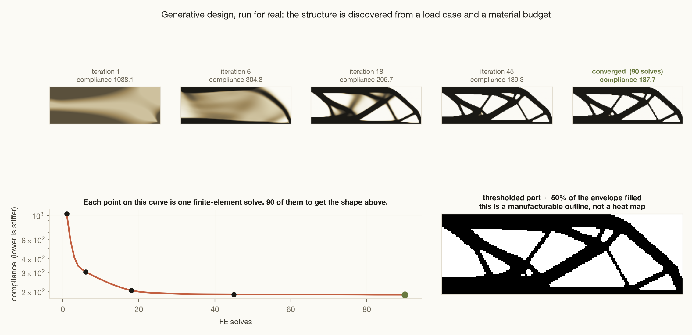
Ninety solves for a two-dimensional, single-load, linear-elastic, compliance-only problem. Now price the real version. A three-dimensional bracket with four load cases, a stress constraint rather than a compliance objective, a modal floor, and a check that the thing can actually be machined or printed, is somewhere in the thousands to tens of thousands of solves, each of them minutes rather than milliseconds. That is why the task is not in the corpus. It is not that we do not know how to grade it. It is that grading it once costs more than training on ten thousand prediction tasks.
Every order of magnitude off the solve time moves that calculation. And the interesting thing is that this is a domain where the model being trained and the tool it needs are converging from opposite directions: learned surrogates are getting good enough to sit in the inner loop precisely because tasks like the ones in this post are teaching them the physics.
07What comes out the other side
Assume that lands, and solve time drops two or three orders of magnitude over the next few years through some mix of GPU-native FEM, reduced-order models, learned preconditioners and surrogates that are trusted inside the loop and audited against the real solver at the end. Here is what I think opens up, roughly in order of how soon.
The through-line is that engineering has an unusually clean separation between proposing something and checking it, and checking has always been the expensive half. Models are getting good at proposing. The moment checking gets cheap, the loop closes, and it closes in a domain where the ground truth is physics rather than human preference. That is a much better setting for automation than most of the ones people are excited about.
I would put the honest bound on this too. None of it removes the engineer, because none of it decides what to build or which failure modes are acceptable. What it removes is the part of the job that is waiting for a solve to finish, and there is a great deal of that.
08The failure mode that comes with it
Fast approximate solvers introduce a new problem, and it is worse than the one they fix. If the agent is being graded by a surrogate, it will learn to satisfy the surrogate rather than the physics. That is reward hacking with extra steps, and it is harder to detect than anything in Part Two: the part passes, the numbers look right, and the error lives in the model of reality rather than in the answer. You do not find out at grading time. You find out on a test rig.
The countermeasures are the ones that already work here, scaled up. Verify against the expensive ground truth on a held-out slice, so the surrogate's own error distribution is measured rather than assumed. Gate on derived physical invariants that an approximation has no particular reason to respect, the way the convection task gates on heat flux rather than on the field. And keep a real solver in the loop somewhere, even if it only runs on one design in a thousand, because a surrogate that is never audited is just a very confident guess.
That is the same discipline this whole corpus already runs on. The reason physics works as a training signal is not that it is convenient. It is that it is an adversary which never gets bored, never accepts a plausible-sounding answer, and never has to be paid per label. Every field in this post came out of a linear solve or an eigenvalue problem that took under a minute on a laptop. The parts that are hard to check are precisely the parts we are not training on yet, and closing that gap is most of the work that is left.